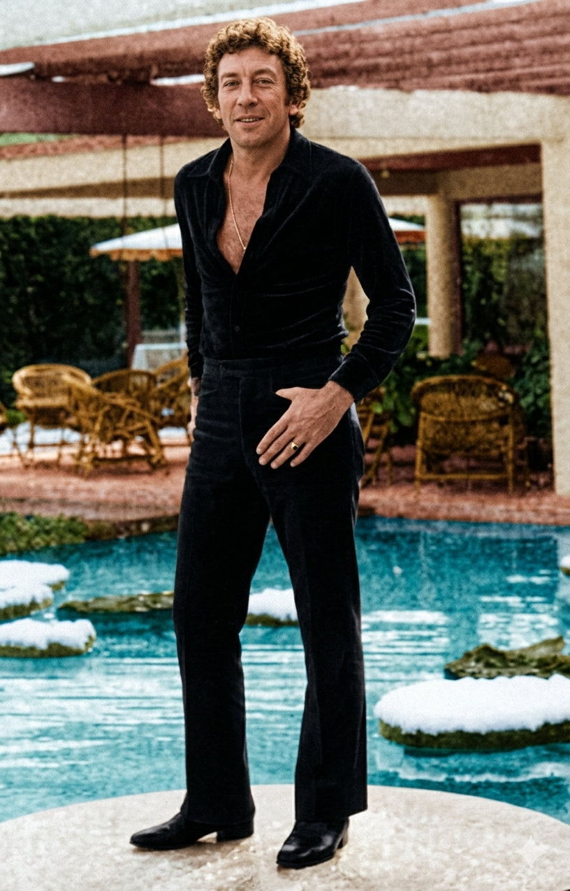

סרג' גינזבורג
Serge Gainsbourg
אטימולוגיה ומקור השם המלא
שם מקורי: לוסיאן גינזבורג (Lucien Ginsburg)
נולד כיהודי בפריז בשם לוסיאן.
Lucien: מקור לטיני (Lucianus), הנגזר מהמילה "Lux" שמשמעותה "אור".
Ginsburg: שם משפחה יהודי-אשכנזי המעיד על מוצא מהעיר גינצבורג (Günzburg) שבבוואריה, גרמניה.
שם הבמה (פרטי): סרג' (Serge)
הוא תיעב את השם לוסיאן, וטען שזה "שם של ספר (מעצב שיער)". הוא בחר בשם "סרג'" כמחווה לשורשיו הרוסיים (הוריו היו מהגרים מרוסיה) ולשם בעל צליל גברי, אמנותי ונוקשה יותר.
שם משפחה במה: גינזבורג (Gainsbourg)
הוא שינה את איות שם המשפחה שלו מ-Ginsburg ל-Gainsbourg. התוספת של האותיות 'A' ו-'O' נועדה לשוות לשם ניחוח אנגלי-צרפתי, אך בעיקר הייתה זו מחווה גלויה לצייר האנגלי הנערץ עליו, תומאס גיינסבורו (Thomas Gainsborough). סרג' רצה במקור להיות צייר קלאסי, והשם היווה עבורו פיצוי על חלום הציור שזנח לטובת המוזיקה.
ילדות בצל טלאי צהוב וחלומות מכחול
פליטים מרוסיה: סרג' נולד בפריז להורים יהודים (יוסף ואוליה) שנמלטו מרוסיה בעקבות המהפכה הבולשביקית ב-1917. אביו, שהיה מוזיקאי מחונן ופסנתרן קלאסי, נאלץ לנגן במועדוני קברט וברים בפריז כדי לפרנס את המשפחה, ובכך חשף את בנו הצעיר למוזיקה ולחיי הלילה מגיל אפס.
הכיבוש הנאצי והטלאי הצהוב: ילדותו של סרג' נקטעה באכזריות עם פרוץ מלחמת העולם השנייה וכיבוש צרפת. כנער יהודי בפריז, הוא נאלץ לענוד את הטלאי הצהוב (אירוע שצילק אותו ושאליו התייחס בציניות מרירה שנים רבות אחר כך בשיר "כוכב צהוב"). כאשר החלו האקציות והגירושים להשמדה, המשפחה נמלטה מפריז לאזור ה"חופשי" (לימוז'), שם הסתתרו תחת זהות בדויה (סרג' הפך ל"לוסיאן גימבר" - Lucien Guimbard) ושרדו את המלחמה בפחד מתמיד. טראומה זו נטעה בו ראיית עולם פסימית וצינית.
אמנות הפלסטית כחלום ראשון: לפני שהפך למוזיקאי, גינזבורג רצה להיות צייר קלאסי. הוא למד באקדמיה לאמנויות בפריז, שם גם פגש את אשתו הראשונה. רק בגיל 30, מתוך תסכול מחוסר הצלחתו כצייר ובעקבות השראתו של בוריס ויאן (סופר ומוזיקאי), החל לכתוב שירים ולנגן בפסנתר במועדונים.
אידאולוגיה והישגים
ה"משורר המקולל" והפרובוקטור: גינזבורג היה הילד הרע של התרבות הצרפתית. האידאולוגיה שלו התבססה על ניפוץ מוסכמות, חופש ביטוי מוחלט ופרובוקציה מכוונת. הוא אהב לעורר שערוריות (כמו להעלות באש שטר של 500 פרנק בשידור חי בטלוויזיה, או להקליט גרסת רגאיי להמנון הצרפתי שגררה איומים על חייו מצד ימנים קיצוניים).
גאונות טקסטואלית ומוזיקלית: הוא נחשב לגאון של השפה הצרפתית. הטקסטים שלו היו עמוסים במשחקי מילים כפולים, אליטרציות, חרוזים מורכבים וציניות מושחזת. מוזיקלית, הוא היה זיקית: הוא החל כזמר שאנסון מסורתי, אך היה מהראשונים בצרפת שאימצו ושילבו ג'אז, פופ רוק, פאנק, אלקטרוניקה, ואף היה הראשון שהביא את הרגאיי לצרפת (לאחר שהקליט בג'מייקה עם להקתו של בוב מארלי).
הצלחה בינלאומית מתוך שערורייה: למרות קולו הנמוך והדיבורי, הוא כתב והלחין עבור גדולי הזמרים (בריז'יט ברדו, ג'ולייט גרקו, ג'יין בירקין). שירו הבוטה "Je t'aime... moi non plus", למרות שהוחרם על ידי הותיקן ותחנות רדיו רבות בעולם בגלל אופיו המיני המפורש, הגיע למקום הראשון במצעד הבריטי ב-1969 – הישג נדיר לשיר בשפה זרה.
השירים הגדולים
• מקורות מחקר:
- Gainsbourg - ביוגרפיה מקיפה מאת ז'יל ורלאן (Gilles Verlant), המנתחת את תקופת הסתרתו במלחמה ואת ההשפעות של הקלאסיקה על יצירותיו.
- A Fistful of Gitanes - ביוגרפיה באנגלית מאת סילבי סימונס.
- ארכיוני מכון ה-INA הצרפתי - המתעדים את פרובוקציות הטלוויזיה ואת המעבר מלימודי ציור למוזיקה.